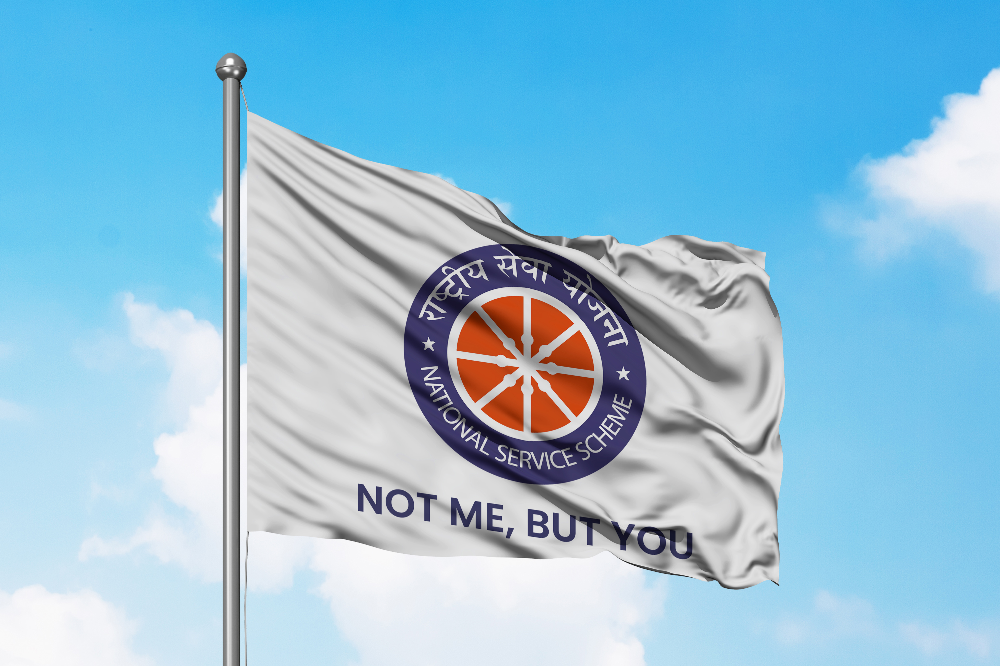
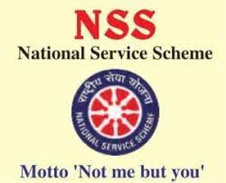
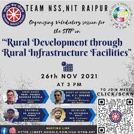
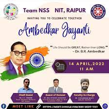

“Not For Me But For The Nation”
National Service Scheme was founded in 1969 with the aim of providing the youths of the country
with hands-on experience of community service. We, at NIT Raipur aim to do the same. Team NSS of
NIT Raipur is committed to organizing events that help to promote social awareness and give
something back to the society.
Through NSS, members learn to be kinder and more compassionate towards their fellow beings and get an experience of serving their society. NSS helps in developing its members to become responsible members of the country.
Events organised by team NSS

